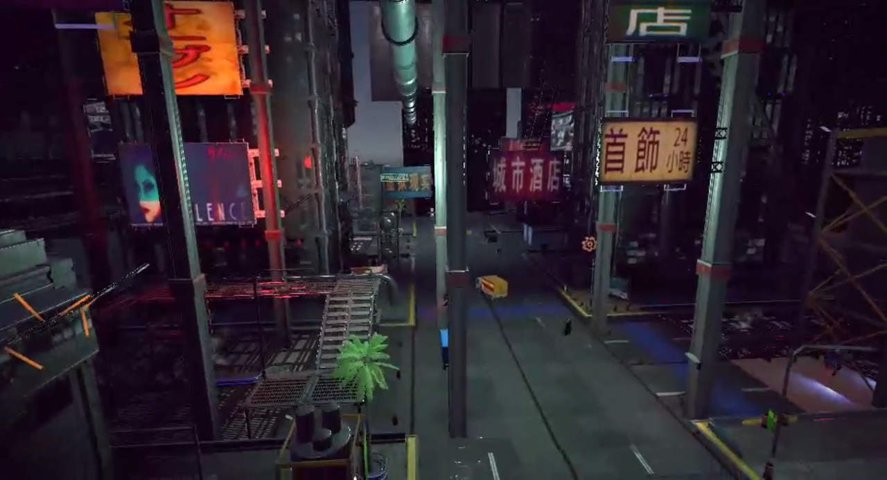
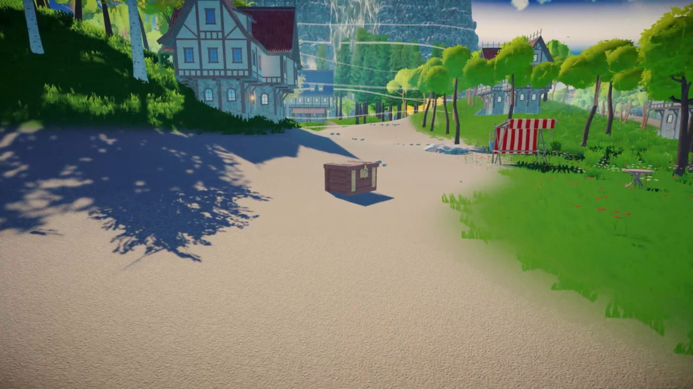
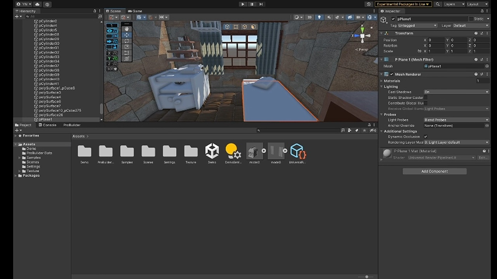

Environment building
Cybercity
A cyberpunk city environment built with vertical architecture, neon signage, dense atmosphere, and cinematic lighting.
3D modeling + environment building
A collection of environment builds, modeling videos, process recordings, and rendered scenes showing both final visual output and production process.

Environment building videos
A cyberpunk city environment built with vertical architecture, neon signage, dense atmosphere, and cinematic lighting.

A stylized island environment with landscape composition, paths, props, architecture, and outdoor lighting designed as a navigable space.
3D modeling

An architectural modeling study documented through video, focused on form construction and spatial structure.
Open videoInterior scene gallery
A rendered interior scene presented through multiple camera angles, lighting treatments, and composition choices.